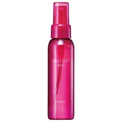

鼻あてとマスクの当たる所に

コーセー
メイク キープ ミスト EX+ 80mL
80mL
¥1430税込・出典掲載価格
選び方と声
- 選ぶ条件：仕上げにひと吹き足したい人。使い方の欄に、マスクや襟もとのこすれが気になる部分には1〜2プッシュ重ねる案内がある。
- 口コミには、ティッシュで一回押さえるだけで済むようになった、という声があった
気になる声気になる点：霧の広がり方に不満の声もある。香料とエタノール入り。落とすときはクレンジングで
販売価格・容量・送料はリンク先でご確認ください